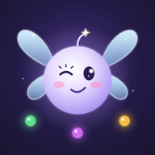

Thanks for playing! If something isn't working or you have an idea for the game, email taverncontract@gmail.com and we'll get back to you.
How do I learn the rules? Tap How to play on the setup screen, or open the menu (☰) during a game.
I closed the app mid-game. Is it lost? No. Your game is saved after every turn and picks up where you left off.
How do I end a game early? Open the menu (☰) and choose Restart game or Quit to setup.
How do I turn off sound or vibration? Use the speaker and vibration buttons on the setup screen, or the menu during a game.